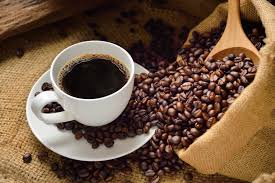

Café
Déjate seducir por la rica y vibrante experiencia de nuestro café guatemalteco, una verdadera joya de la cultura culinaria de Guatemala. Proveniente de las tierras altas de Guatemala, nuestro café es cultivado con cuidado y pasión por los agricultores locales, que trabajan arduamente para ofrecerte una taza de café excepcional.
Cada sorbo de nuestro café te transportará a las exuberantes montañas de Guatemala, con su aroma embriagador y su sabor complejo y delicioso. Con notas de chocolate, caramelo y frutas tropicales, nuestro café es una verdadera delicia para los amantes del café.
Ya sea que prefieras un café suave y equilibrado o un espresso intenso y audaz, nuestro café guatemalteco es la elección perfecta para satisfacer tus antojos de café. Disfrútalo en casa o ven a nuestro restaurante y déjanos prepararte una taza fresca y aromática de nuestro café guatemalteco.
¡Ven y descubre por qué el café guatemalteco es reconocido en todo el mundo por su calidad y sabor excepcionales!
esta disponible por tan solo Q10.00
